Sběrnice
Zadání
Pozorujte realizaci a zjistěte dynamické vlastnosti (stat. časová analýza) realizace sběrnice různé délky na architektuře Xilinx Viretx.
Náš tým
- Tomáš Dedek
- Miloš Hrdý
- Michal Trs
Postup řešení
Pro měření na sběrnici uvnitř FPGA jsme napsali jednoduchý design a použili Xilinx PACE pro přiřazení pinů k signálum.
Poté jsme spustily Place & Route. Výsledné zpoždění na sběrnici je nejlépe vidět z "Asynchronous Delay Report".
Testované Obvody
- Virtex xcv600 - 6bg432
- Virtex2 xc2v3000 - bf957
- Virtex4 xc4vlx80 - ff1148
- Spartan2 xc2s150 - fg456
Testovací design
library IEEE;
use IEEE.STD_LOGIC_1164.all;
entity sbernice is
port(
INPUT: in std_logic_vector(1 downto 0);
OUTPUT: out std_logic_vector(1 downto 0)
);
end sbernice;
architecture Behavioral ofsbernice is
begin
end Behavioral;
Rozložení pinů na pouzdru FPGA
| 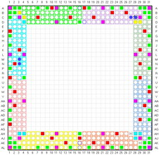 |
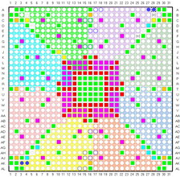 |
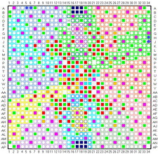 |
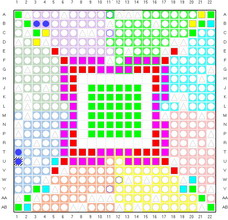 |
| Virtex xcv600 - 6bg432 |
Virtex2 xc2v3000 - bf957 |
Virtex4 xc4vlx80 - ff1148 |
Spartan2 xc2s150 - fg456 |
Ukázka architektury FPGA
| 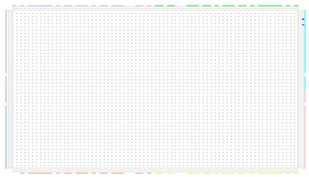 |
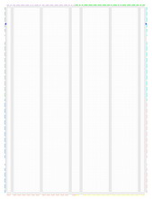 |
 |
| Virtex xcv600 - 6bg432 |
Virtex2 xc2v3000 - bf957 |
Spartan2 xc2s150 - fg456 |
Odhad zpoždění po syntéze (Synthesis report - Default path analysis)
| Virtex xcv600 - 6bg432 |
Virtex2 xc2v3000 - bf957 |
Virtex4 xc4vlx80 - ff1148 |
Spartan2 xc2s150 - fg456 |
| 6.590 ns |
4.779 ns |
4.932 ns |
6.479 ns |
Zpoždění implemetovaného designu (place & route -Asynchronous delay report)
Virtex xcv600 - 6bg432
| input 0 | input 1 | output 0 | output 1 | path delay 0 [ns] | path delay 1 [ns] |
|---|
| B18 | C18 | D18 | B17 | 0.695 | 0.695 |
| B18 | D18 | C18 | B17 | 1.060 | 1.179 |
| G30 | H30 | H3 | H2 | 3.283 | 3.306 |
| M3 | N3 | B8 | B9 | 3,045 | 4,500 |
| M3 | N3 | C27 | C28 | 4.919 | 5.951 |
| M3 | N3 | M31 | N31 | 3.524 | 3.306 |
| D3 | C2 | AH30 | AJ30 | 7.663 | 7.670 |
Virtex2 xc2v3000 - bf957
| input 0 | input 1 | output 0 | output 1 | path delay 0 [ns] | path delay 1 [ns] |
|---|
| C11 | B9 | C10 | B7 | 1.068 | 0.825 |
| C11 | C10 | B9 | B7 | 0.587 | 0.568 |
| G27 | H27 | D1 | E1 | 4.411 | 4.091 |
| A9 | A10 | A11 | A12 | 1.431 | 1.390 |
| A9 | A10 | M26 | M27 | 4.963 | 4.696 |
| AF16 | AG16 | AF17 | AG17 | 1.218 | 1.218 |
| AK3 | AK4 | A27 | A28 | 6.473 | 5.985 |
Virtex4 xc4vlx80 - ff1148
| input 0 | input 1 | output 0 | output 1 | path delay 0 [ns] | path delay 1 [ns] |
|---|
| A5 | A6 | B5 | B6 | 1.314 | 1.314 |
| A5 | A6 | J34 | H34 | 6.989 | 6.611 |
| AP4 | AJ1 | D34 | A31 | 7.095 | 6.660 |
Spartan2 xc2s150 - fg456
| input 0 | input 1 | output 0 | output 1 | path delay 0 [ns] | path delay 1 [ns] |
|---|
| A3 | A4 | B4 | E6 | 0.550 | 0.524 |
| C16 | D15 | A17 | E15 | 0.882 | 0.941 |
| G4 | G3 | F22 | G19 | 1.794 | 1.794 |
| T1 | U1 | C22 | D22 | 4.130 | 4.062 |
Ukázky naroutovaných designů
| 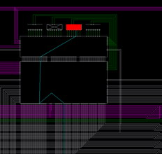 |
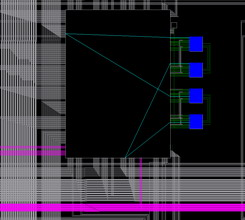 |
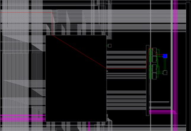 |
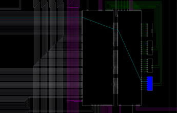 |
| Virtex xcv600 - 6bg432 |
Virtex2 xc2v3000 - bf957 |
Virtex4 xc4vlx80 - ff1148 |
Spartan2 xc2s150 - fg456 |
Graf - doba zpoždění signálu na vzdálenosti
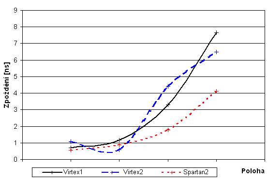
Souhrn měření
| Device |
Virtex xcv600 - 6bg432 |
Virtex2 xc2v3000 - bf957 |
Virtex4 xc4vlx80 - ff1148 |
Spartan2 xc2s150 - fg456 |
| Default path analysis [ns] |
6.590 |
4.779 |
4.932 |
6.479 |
| Asynchronous delay report [ns] |
7.670 |
6.473 |
7.095 |
4.130 |